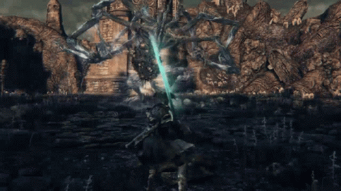

Amygdala

Description
Numerous Amygdalas can be found throughout Yharnam, but the one at the Nightmare Frontier
is guarding one of the precious Chalices often mentioned by Gehrman. It is a nine-armed
creature who generates vortexes at the center of its palms and can shoot lasers out of
its many eyes.
Tips
- Bolt damage is effective against the creature that relates to God-type enemies.
- Its weakspot, though hard to reach, is its head along with one of the arms that has white skin exposed.
- Try to remain on its side and never dodge backwards to avoid getting hit by most of its attacks.